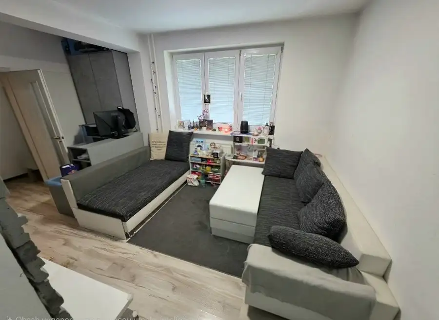
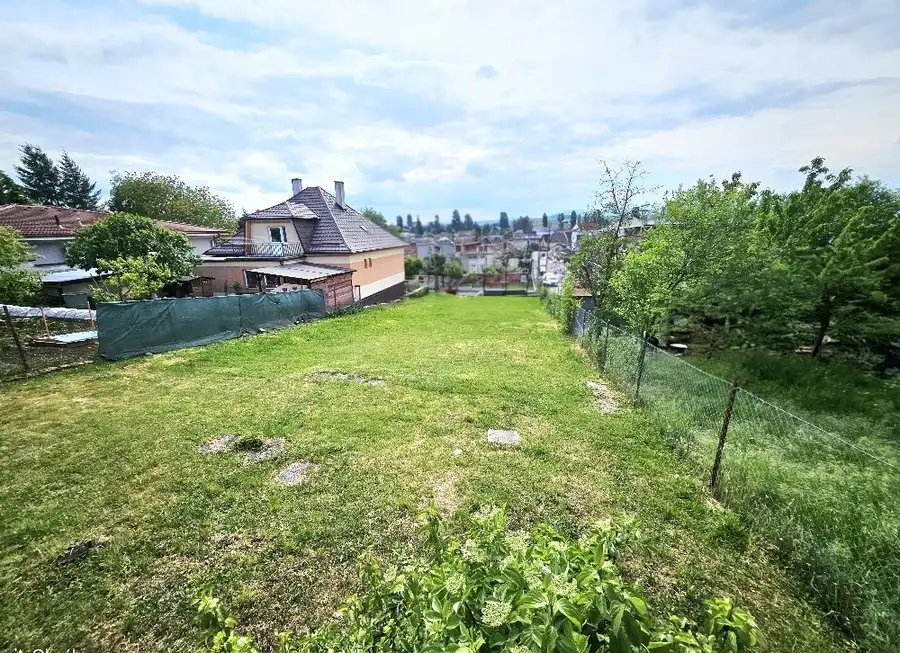
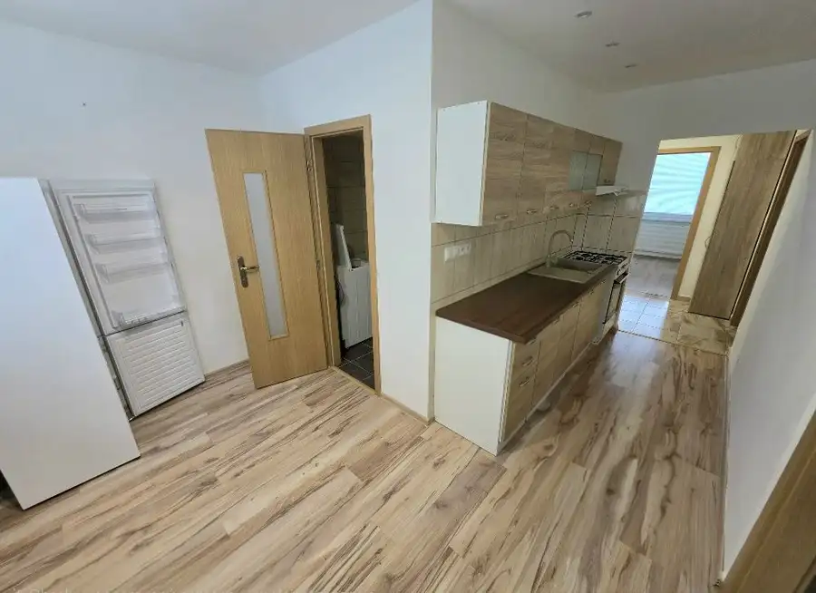
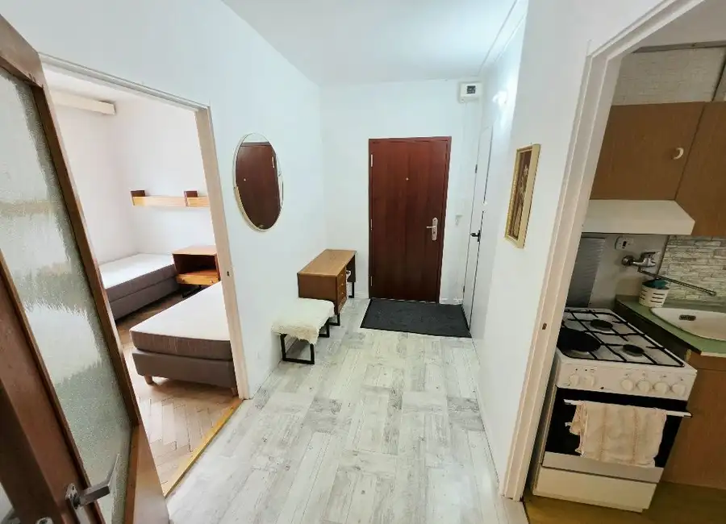
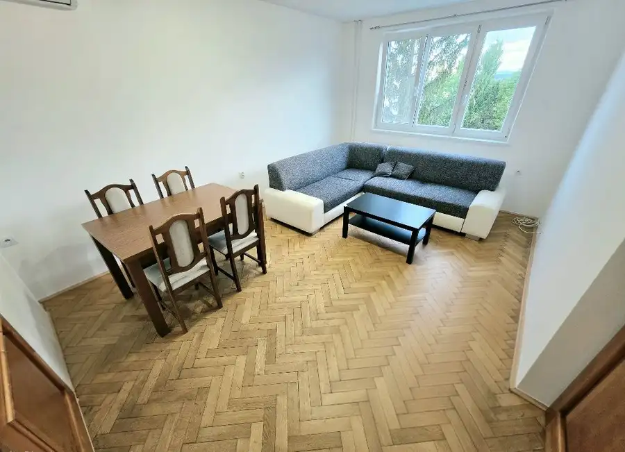

Aktuálna ponuka
10 nehnuteľností, predovšetkým byty, rodinné domy, pozemky. Každá má vlastnú stránku s fotkami, popisom a mapou.
Prezrieť ponuku
Viera KováčikováRealitná maklérka
Realitná maklérka · VAŠE REALITY s. r. o.
Predaj a prenájom nehnuteľností · Bánovce nad Bebravou, Kšinná

 Byt6
63 000 €REZERVOVANE/1 izbový byt Bánovce nad Bebravou/DUBNIČKA/34 m2/2 xLOGGIA
Bánovce nad Bebravou
1-izbový34 m²
REZERVOVANÉ /Ponúkame Vám na predaj EXKLUZÍVNE IBA U NÁS - 1 izbový byt Bánovce nad Bebravou/ DUBNIČKA / 2 x LOGGIA / PIVNICA / PLASTOVÉ OKNÁ/Plocha:…
Rodinné domy10
49 900 €Rodinný dom s krásnym pozemkom v obci Kšinná /POZEMOK 831 m2
Kšinná
3-izbový8312 m²
Rodinný dom s krásnym pozemkom v obci Kšinná- EXKLUZÍVNY PREDAJ Ponúkame Vám exkluzívne iba u nás na predaj rodinný dom v malebnej obci Kšinná, okres…
Byt8
123 500 €3 izbový byt Bánovce nad Bebravou/CENTRUM-SEVER/BALKÓN/PIVNICA
Bánovce nad Bebravou
3-izbový66 m²
Ponúkame Vám na predaj - EXKLUZÍVNE IBA U NÁS - 3 izbový byt - Bánovce nad Bebravou / CENTRUM- SEVER / BALKÓN / PIVNICA /Plocha: úžitková 66 m2.…
Byt6
63 000 €REZERVOVANE/1 izbový byt Bánovce nad Bebravou/DUBNIČKA/34 m2/2 xLOGGIA
Bánovce nad Bebravou
1-izbový34 m²
REZERVOVANÉ /Ponúkame Vám na predaj EXKLUZÍVNE IBA U NÁS - 1 izbový byt Bánovce nad Bebravou/ DUBNIČKA / 2 x LOGGIA / PIVNICA / PLASTOVÉ OKNÁ/Plocha:…
Rodinné domy10
49 900 €Rodinný dom s krásnym pozemkom v obci Kšinná /POZEMOK 831 m2
Kšinná
3-izbový8312 m²
Rodinný dom s krásnym pozemkom v obci Kšinná- EXKLUZÍVNY PREDAJ Ponúkame Vám exkluzívne iba u nás na predaj rodinný dom v malebnej obci Kšinná, okres…
Byt8
123 500 €3 izbový byt Bánovce nad Bebravou/CENTRUM-SEVER/BALKÓN/PIVNICA
Bánovce nad Bebravou
3-izbový66 m²
Ponúkame Vám na predaj - EXKLUZÍVNE IBA U NÁS - 3 izbový byt - Bánovce nad Bebravou / CENTRUM- SEVER / BALKÓN / PIVNICA /Plocha: úžitková 66 m2.…

Byt9 103 500 €3 izbový byt Bánovce nad Bebravou /CENTRUM / 52 m2/ PIVNICA Bánovce nad Bebravou 3-izbový52 m² Ponúkame Vám -EXKLUZÍVNE IBA U NÁS -na predaj 3 izbový byt Bánovce nad Bebravou / CENTRUM / KOMPLETNÁ REKONŠTRUKCIA/ KOMPLETNE ZARIADENÝ A VYBAVENÝ /…
Pozemok 119 500 €Pozemok Bánovce nad Bebravou – 794 m² / centrum mesta/ Znížená cena Bánovce nad Bebravou 794 m² NOVÁ ZNÍŽENÁ CENA !!! Na predaj pozemok v centre mesta Bánovce nad Bebravou – 794 m² Ponúkame EXKLUZÍVNE IBA U NÁS -na predaj atraktívny pozemok o…
Byt8 Cena dohodouPrenájom Bánovce nad Bebravou/3 izbový byt/ centrum-stred/ Bánovce nad Bebravou 3-izbový66 m² Ponúkame Vám EXKLUZÍVNE IBA U NÁS - na prenájom kompletne zariadený - 3 izbový byt Bánovce nad Bebravou - / CENTRUM - STRED / Plocha: úžitková 66 m2.…
Byt8 Cena dohodouPrenájom Bánovce nad Bebravou/3 izbový byt/ centrum-stred/ Bánovce nad Bebravou 3-izbový73 m² Ponúkame Vám EXKLUZÍVNE IBA U NÁS - na prenájom kompletne zariadený - 3 izbový byt Bánovce nad Bebravou - / CENTRUM - STRED / BALKÓN / Plocha:…
Byt6 Cena dohodouPrenájom Bánovce nad Bebravou/3 izbový byt/ centrum / 69m2 Bánovce nad Bebravou 3-izbový69 m² Ponúkame Vám EXKLUZÍVNE IBA U NÁS - na prenájom čiastočne zariadený - 3 izbový byt Bánovce nad Bebravou - / CENTRUM / BALKÓN / PIVNICA / Plocha:… Byt9
112 000 €3 izbový byt Bánovce nad Bebravou/ DUBNIČKA /63 m2/ LOGGIA/ PIVNICA
Bánovce nad Bebravou
3-izbový63 m²
Ponúkame Vám na predaj EXKLUZÍVNE IBA U NÁS - 3 izbový byt Bánovce nad Bebravou/ DUBNIČKA / LOGGIA / PIVNICA / ZARIADENÝ /Plocha: úžitková 63m2.…
Byt9
112 000 €3 izbový byt Bánovce nad Bebravou/ DUBNIČKA /63 m2/ LOGGIA/ PIVNICA
Bánovce nad Bebravou
3-izbový63 m²
Ponúkame Vám na predaj EXKLUZÍVNE IBA U NÁS - 3 izbový byt Bánovce nad Bebravou/ DUBNIČKA / LOGGIA / PIVNICA / ZARIADENÝ /Plocha: úžitková 63m2.…
Tomuto výberu zatiaľ nezodpovedá žiadna ponuka. Napíšte mi, čo hľadáte.
Volám sa Viera Kováčiková. Som realitná maklérka kancelárie VAŠE REALITY s. r. o. a pôsobím predovšetkým v lokalitách Bánovce nad Bebravou a Kšinná (Trenčiansky kraj).
10 nehnuteľností, predovšetkým byty, rodinné domy, pozemky. Každá má vlastnú stránku s fotkami, popisom a mapou.
Prezrieť ponukuBánovce nad Bebravou, Kšinná a okolie. Ponuku si môžete prezrieť podľa lokality.
Nehnuteľnosti v lokaliteOdhad trhovej ceny, príprava prezentácie, obhliadky, zmluvy a odovzdanie nehnuteľnosti.
Dohodnúť stretnutieNa čo sa pýtate najčastejšie, skôr než sa stretneme.
Odhad trhovej ceny vychádza z aktuálnych ponúk a predajov v lokalite, nie z cenníkových tabuliek. Podmienky Vám poviem pri prvom telefonáte.
Najprv obhliadka a odhad ceny, potom príprava prezentácie (fotografie, popis, inzercia), obhliadky so záujemcami, rezervačná zmluva, kúpna zmluva, návrh na vklad do katastra a odovzdanie nehnuteľnosti. O každom kroku viete vopred.
Najrýchlejšie cez WhatsApp alebo telefón. Termín stretnutia alebo obhliadky dohodneme podľa Vás.